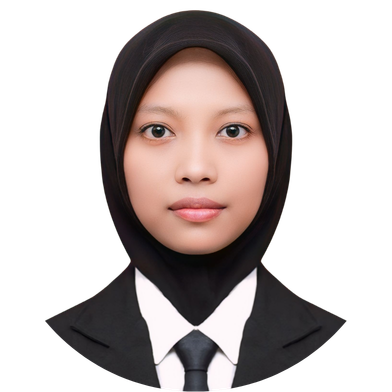

Porto Miftah

Miftahul Janaah
Tentang Saya
Saya mahasiswa Pendidikan Profesi Guru (PPG) bidang studi Informatika di Universitas Negeri Yogyakarta. Portofolio ini memuat dokumentasi Praktik Pengalaman Lapangan (PPL) Mandiri yang saya laksanakan di SMK Negeri 2 Depok, mulai dari praktik mengajar mandiri hingga kegiatan nonmengajar di sekolah.
Melalui PPL Mandiri, saya berlatih merancang, melaksanakan, dan mengevaluasi pembelajaran serta asesmen secara mandiri dengan prinsip Pembelajaran Mendalam. Setiap siklus praktik saya refleksikan untuk melihat perkembangan kompetensi sebagai calon guru Informatika yang profesional, reflektif, dan berpusat pada murid.
Praktik Mengajar Mandiri
Empat siklus praktik mengajar di SMK Negeri 2 Depok. Pilih siklus untuk melihat RPM, media pembelajaran, bahan ajar, hasil belajar murid, video pembelajaran, dan refleksi.
Kegiatan Nonmengajar
Kegiatan di luar kelas selama PPL Mandiri: deskripsi kegiatan, peran saya, hasil, dokumentasi, dan refleksi.
Dokumentasi
Kumpulan foto dan dokumentasi kegiatan selama PPL.
Refleksi dan Evaluasi Akhir
Evaluasi perkembangan kompetensi, kendala, dan tindak lanjut selama PPL Mandiri.